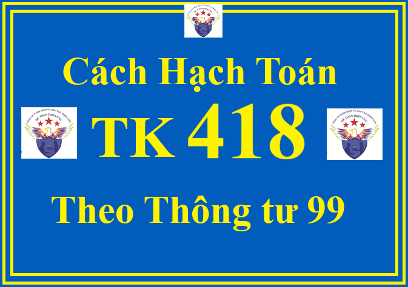

Tài khoản 418 - Các quỹ khác thuộc vốn chủ sở hữu theo Thông tư 99/2025/TT-BTC dùng để phản ánh số hiện có và tình hình tăng, giảm các quỹ khác thuộc nguồn vốn chủ sở hữu. Các quỹ khác thuộc nguồn vốn chủ sở hữu được hình thành từ lợi nhuận sau thuế chưa phân phối. Việc trích và sử dụng quỹ khác thuộc nguồn vốn chủ sở hữu phải theo cơ chế tài chính hiện hành đối với từng loại doanh nghiệp hoặc theo quyết định của chủ sở hữu.
1. Kết cấu và nội dung phản ánh của Tài khoản 418 - Các quỹ khác thuộc vốn chủ sở hữu
| Bên Nợ: | Bên Có: |
| Tình hình chi tiêu, sử dụng các quỹ khác thuộc vốn chủ sở hữu của doanh nghiệp. |
Các quỹ khác thuộc vốn chủ sở hữu tăng do được trích lập từ lợi nhuận sau thuế chưa phân phối.
|
|
Số dư bên Có:
Số quỹ khác thuộc vốn chủ sở hữu hiện có tại thời điểm kết thúc kỳ kế toán.
|
2. Cách định khoản hạch toán TK 418 - Các quỹ khác thuộc vốn chủ sở hữu theo Thông tư 99/2025/TT-BTC
a) Trích lập quỹ khác thuộc vốn chủ sở hữu từ lợi nhuận sau thuế chưa phân phối, ghi:

Nợ TK 421 - Lợi nhuận sau thuế chưa phân phối
Có TK 418 - Các quỹ khác thuộc vốn chủ sở hữu.
b) Khi sử dụng các quỹ khác thuộc vốn chủ sở hữu, ghi:
Nợ TK 418 - Các quỹ khác thuộc vốn chủ sở hữu
Có các TK 111, 112, 331,...
c) Trường hợp bổ sung vốn góp của chủ sở hữu từ các quỹ khác thuộc vốn chủ sở hữu ghi:
Nợ TK 418 - Các quỹ khác thuộc vốn chủ sở hữu
Có TK 4111 - Vốn góp của chủ sở hữu.